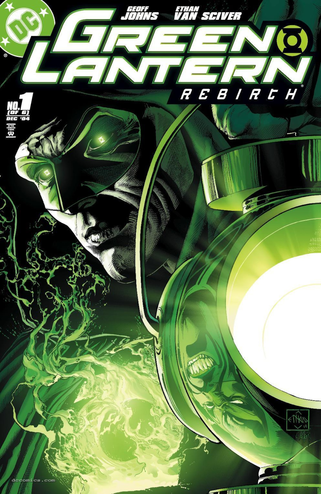

Reading Era
The Johns Era
Nine years that rebuilt the mythology — the emotional spectrum, the War of Light, and the fall of the Guardians.

2004 – 2013
Start with Green Lantern: Rebirth #1.
The story
In 2004, Geoff Johns did the impossible: he brought Hal Jordan back from the dead — and in doing so, rebuilt the entire Green Lantern mythology from the ground up. Green Lantern: Rebirth revealed that Hal's fall was the work of Parallax, the living embodiment of fear, imprisoned in the Central Power Battery. Redemption wasn't a retcon; it was the key that unlocked everything.
What followed was the most ambitious saga in Green Lantern history. The Sinestro Corps War (2007) introduced the yellow light of fear as a full Corps. Then came the rest of the emotional spectrum: red rage, orange avarice, blue hope, indigo compassion, violet love — each with its own Corps, its own oath, its own entity. The War of Light built across years of comics toward Blackest Night (2009–10), the dead rising against the living, and War of the Green Lanterns (2011), the Corps turned against itself.
Johns closed his run with the Wrath of the First Lantern (2013) — Volthoom, the first being to wield the light, the destruction of Korugar, the execution of the Guardians, and the rise of the Templar Guardians. Nine years, one vision, and a mythology that will define Green Lantern for generations.
Key series
- Green Lantern: Rebirth #1–6 (2004–05)
- Green Lantern (vol. 4) #1–67 (2005–11)
- Green Lantern Corps (vol. 2) #1–63 (2006–11)
- Blackest Night #0–8 (2009–10)
- Green Lantern (vol. 5) #1–20 (2011–13)
Key characters
 Hal JordanRedeemed and reborn
Hal JordanRedeemed and reborn
 SinestroThe war he started
SinestroThe war he started
 Kyle RaynerThe Torchbearer
Kyle RaynerThe Torchbearer
 AtrocitusRage incarnate
AtrocitusRage incarnate
Green Lantern: Rebirth (2004) #1 — cover artwork. Ethan Van Sciver (cover pencils and inks); Peter Steigerwald (cover colors). Artwork source & details.
Artwork credits (5 images)
Credits refer to the illustrations shown here. Open a record for sources, adaptations and unresolved details. Some artwork and source pages contain story spoilers.
- Johns — Green Lantern: Rebirth (2004) #1 — cover artwork. Ethan Van Sciver (cover pencils and inks); Peter Steigerwald (cover colors).
- Hal Jordan — Hal Jordan and the Green Lantern Corps #45 (2018), Tyler Kirkham variant cover, cropped detail. Tyler Kirkham (cover pencils and inks); Arif Prianto (cover colors).
- Sinestro — Green Lantern (2011) #52 (2016), New 52 homage variant cover artwork. Billy Tan (variant cover pencils and inks); Alex Sinclair (variant cover colors).
- Kyle Rayner — Green Lantern (2023) #33 / legacy #600 (2026), David Nakayama variant cover, cropped detail. David Nakayama (cover art and colors).
- Atrocitus — Artist credit unconfirmed.